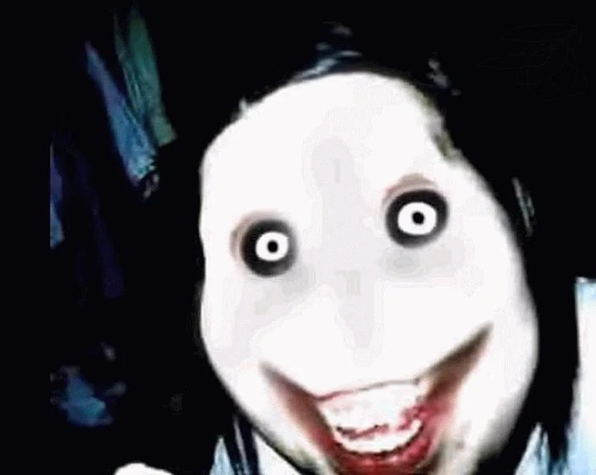

Sobre su apariencia, este es un adolescente que sufre un accidente, el cual le genera un trauma, convirtiéndolo en un asesino en serie, actuando de noche para ocultarse en la oscuridad. De acuerdo a los recursos que lo describen, tiene el cabello largo que cubre su rostro, ojos hundidos, piel pálida y una sonrisa similar a la del Joker, dándole un aspecto aterrador. Aquellos que lo recuerdan lo asocian rápidamente a un meme que se hizo viral en Internet.

Origen
Jeff y su familia acababan de mudarse a un nuevo vecindario. Su padre había conseguido un ascenso en el trabajo. Pensó que sería mejor vivir en una de esas casas de "fantasía". Sin embargo, Jeff y su hermano Liu no podían quejarse. Mientras desempacaban, uno de sus vecinos pasó por allí, era una mujer relativamente joven.
"Buenos días, soy Bárbara, vivo al otro lado de la calle, sólo quería presentarme a mí y a mi hijo", se da la vuelta y llama a su hijo, "Billy, estos son nuestros nuevos vecinos."
Billy dijo hola y corrió de nuevo a jugar en su patio.
“Bueno”, empezó la madre de Jeff, "Yo soy Margaret, este es mi marido Peter, aquí están mis dos hijos, Jeff y Liu."
Cada uno de ellos se presentó, Bárbara los invitó al cumpleaños de su hijo. Jeff y su hermano intentaron protestar, pero su madre aceptó encantada. Cuando Bárbara por fin se fue, Jeff encaró a su madre.
“Mamá, ¿por qué una fiesta infantil? Por si no lo ha notado, ya no soy más un niño."
"Jeff", replica su madre, "Nos acabamos de mudar aquí, debemos demostrar que queremos pasar tiempo con nuestros vecinos. Iremos a esa fiesta."
Jeff intentaba protestar, pero se detuvo, sabiendo que él no podía hacer nada. Siempre que su mamá decía algo, era definitivo. Jeff se encierra en su cuarto y se deja caer sobre su cama. Él se acuesta allí mirando su techo, poco a poco lo invade una extraña sensación. No es tanto un dolor, pero sí una sensación extraña. Lo ignora y lo confunde con un sentimiento al azar, de esos que te persiguen cuando experimentas una duda muy profunda.
Al día siguiente, Jeff se prepara para la escuela. Mientras estaba sentado, tomando su desayuno, una vez más padece esa sensación, esta vez más fuerte. Y le afligió un dolor, como un leve tirón, pero nuevamente lo ignoró.
Liu y él terminaron su desayuno y se dirigieron hasta la parada de autobús. Mientras aguardaban, un chico montado en una patineta salta sobre ellos, a sólo unos centímetros por encima de sus rodillas. Ambos se sobrecogen por la sorpresa.
"¡Hey! ¿Qué diablos?"
El chico se cayó y se volteó hacia ellos. Pateó la patineta y, al rebotar esta por uno de sus costados, la sostuvo con sus manos. El chico parece tener cerca de doce, un año menor que Jeff. Lleva una camisa de Aeropostal y pantalones vaqueros azules algo rasgados.
"Bien, bien, bien. Parece que tenemos un poco de carne nueva."
De repente, aparecen otros dos chicos. Uno de ellos es súper delgado y el otro es enorme.
"Bueno, ya que son nuevos aquí, me gustaría presentarnos. El de ahí es Keith y el otro es Troy. Y yo soy Randy. Ahora, para todos los niños en este barrio hay un pequeño precio por el pasaje, si es que me entienden."
Liu se puso de pie, listo para golpear al chico, pero sus dos amigos levantan sendas navajas hacia él, en actitud ofensiva.
"Esperaba que fueran más cooperativos. Parece que tendremos que hacerlo de la manera difícil."
Keith le pegó un puñetazo en el estómago a Liu, y Troy lo estrechó contra el piso. Randy se acercó a Liu, rebuscando en sus bolsillos y extrajo, al fin, una billetera. Jeff, inmóvil, padecía esa sensación desagradable, fría, erizada de ardores insoportables. Ahora ha sido muy potente, demasiado potente. Se pone de pie, pero Liu le hace gestos para que vuelva a sentarse en la banca de espera. Jeff lo ignora y se acerca a los chicos.
"Escúchame bien, pequeño punk, devuélvele la billetera a mi hermano, de lo contrario…"
Randy guarda la billetera en su bolsillo y saca su cuchillo.
"¿Ah sí? ¿Y qué vas a hacer?", se mofa, mientras desfila su cuchillo frente a la cara de Jeff. Pero este, en un movimiento rápido, toma la muñeca de Randy y se la rompe. Randy soltó un terrible grito; de inmediato, Jeff tomó el cuchillo caído. Troy y Keith se asustaron, indecisos ante los chillidos de dolor de su líder, y trataron de huir, pero Jeff es demasiado rápido. Lanza a Randy al suelo y arremete contra Keith, apuñalándolo en el brazo.
Keith se arranca el cuchillo y lo deja caer al piso, cayendo al suelo en medio de gritos espantosos. Troy continúa corriendo, pero Jeff logra alcanzarlo. No necesita ni siquiera el cuchillo. Le aprieta la garganta y con la otra mano le da de lleno en el estómago una serie de puñetazos, que obligan a Troy a vomitar incluso la cena de la noche pasada. Liu está perplejo, mudo de asombro.
"Jeff, ¿cómo?", susurra brevemente.
Saben que serán culpados por todo el asunto, así que empiezan a correr tan rápido como les es posible. En tanto corren, ladean sus rostros hacia atrás y logran ver al conductor del autobús corriendo hacia Randy y sus compinches.
Cuando Jeff y Liu llegaron a la escuela, no se atrevieron a contar lo que pasó. Todo lo que hacen es sentarse y escuchar. Liu se apacigüaba pensando en que su hermano sólo había golpeado a unos cuantos chicos, pero Jeff disfrutaba del oscuro goce de sentirse poderoso, superior, la necesidad de lastimar por el mero placer de demostrarlo.
Cuando llegó a casa, sus padres le preguntaron cómo había sido su día, a lo que Jeff respondió con una voz un tanto desanimada:
"Fue un día maravilloso."
A la mañana siguiente, oyó que llamaban a su puerta. Caminó hacia abajo para encontrar a dos policías en la puerta y a su madre mirándolo con expresión de enojo.
"Jeff, estos oficiales me dicen que atacaste a tres niños, que no fue una pelea normal, los heriste con un cuchillo."
La mirada de Jeff se sepultó en el suelo.
"Mamá, fueron ellos los que nos atacaron a Liu y a mí".
"Hijo", se pronunció uno de los policías, "encontramos a tres chicos, dos apuñalados y uno tiene un moretón en el estómago, tenemos varios testigos de que los vieron huyendo de la escena. Ahora, ¿qué tienes que decir ante esto?".
Jeff sabía que era inútil. Él podía decir que su hermano y él habían sido atacados por ellos, pero no había pruebas de tal hecho. No podría decir que no estaban huyendo, porque a decir verdad sí lo hacían. Así que Jeff no podía defender ni a Liu ni excusarse a sí mismo.
"Hijo, llama a tu hermano."
Jeff no podía hacerlo, ya que fue él quien golpeó a todos los niños.
"Señor... Fui yo", declaró Jeff, "yo fui quien atacó a los niños, Liu trató de detenerme, pero no pudo."
El policía miró a su compañero y ambos se sorprendieron.
"Bueno, chico, parece que te espera un año en prisión..."
"¡Esperen!", gritó Liu. Todos se sorprendieron al verlo sosteniendo un cuchillo. Los oficiales sacaron sus armas y apuntaron a Liu, "Esperen por favor, no disparen, Jeff es inocente yo hice todo, perdí el control, me golpearon un poco esos punks y me enojé. Tengo las marcas para probarlo."
Él levantó su camisa para revelar heridas y moretones, como si hubiera estado en una lucha.
"Hijo, solo tienes que dejar el cuchillo", dijo el oficial.
Liu soltó el cuchillo, levantó las manos y se acercó a los oficiales.
"No, Liu, fui yo, ¡yo lo hice!", gemía Jeff con lágrimas corriendo por su rostro.
"¿Eh?, pobre hermano, tratando de tomar la culpa de lo que hice", sonrió tristemente Liu.
La policía llevó a Liu a la patrulla.
"¡Liu, diles que fui yo, diles, yo fui quien golpeó a los niños!"
La madre de Jeff puso las manos sobre sus hombros.
"Jeff, por favor, no tienes que mentir, sabemos que fue Liu, puedes detenerte."
Jeff observa con impotencia cómo la patrulla se aleja. Unos minutos más tarde, el padre de Jeff se detiene en el camino de entrada, examina rápidamente la cara de Jeff y sabe que algo anda mal.
"¿Qué sucede?"
Jeff no puede responder. Sus cuerdas vocales están tensas por el llanto. En cambio, la madre de Jeff lleva a su padre a una habitación aparte. Jeff llora sin descanso. Tras una hora de pensamientos extraviados y deseos fallecidos, vuelve a entrar a la casa. Sus padres están tristes y decepcionados.
Él solo quiere dormir, en la esperanza de que el sueño le haga olvidar sus males. Pasaron varios días sin noticias sobre Liu. No hay amigos para distraerse, nada más que tristeza y culpabilidad; por lo menos, hasta el sábado, día en que Jeff se despertó y vio a su madre jovial y risueña.
"Jeff, hoy es el día", saluda mientras abre las cortinas y la luz alumbra el cuarto de Jeff.
"¿Qué, qué día es hoy?", pregunta Jeff semidormido.
"Hoy es el cumpleaños de Billy", le responde su madre.
Jeff se despierta rápidamente.
"Mamá, debes estar bromeando, ¿verdad? Cómo puedes esperar que vaya a una fiesta después de...”
Hay una larga pausa.
"Jeff, ambos sabemos lo que pasó. Creo que esta fiesta podría ser lo que ilumine estos últimos días. Ahora, vístete."
La madre de Jeff sale de la habitación y baja para prepararse. Jeff lucha por levantarse, realmente no tiene ánimos de hacerlo. Elige al azar una camisa y un par de pantalones vaqueros y baja por las escaleras. Su madre y padre se han vestido muy formalmente.
"Jeff, ¿es eso lo que vas a usar?"
"Mejor ve y busca otra cosa", le recomienda su madre, disimulando su fastidio con una sonrisa.
"Jeff, a esta fiesta tienes que ir bien vestido, si quieres causar una buena impresión", explica su padre.
Jeff empieza a gruñir y vuelve a subir a su habitación.
"¡No tengo nada de ropa elegante!", grita desde las escaleras.
"Solo tienes que elegir algo decente", insiste su madre.
Mira a su alrededor, pero no encuentra nada "decente". En su armario hay un par de pantalones de vestir negros que tenía para las ocasiones especiales, pero le hace falta una camisa que combine perfectamente.
Hurgando durante unos minutos todavía, lidiando con que eso sí encaja y aquello no, logra toparse con una sudadera con capucha blanca, tendida en una silla. Le convence, así que la usa.
"¿Eso es lo que llevarás?", le preguntan sus padres. Su madre mira el reloj.
"Oooh, no hay tiempo para cambiarse, vámonos de una vez."
Cruzan la calle hacia la casa de Bill. Tocan a la puerta, siendo recibidos en el acto por Bárbara junto a su esposo, quienes los invitan a pasar. Dentro de la casa abundan los adultos, Jeff no descubre el menor indicio de un niño.
"Los chicos están en el patio, Jeff… ¿Qué te parece si conoces a algunos de los niños?", le invita Bárbara alegremente.
En efecto, los niños están corriendo por el patio en trajes de vaqueros y se disparan los unos a los otros con pistolas de plástico. Jeff se queda de pie, algo incómodo. Entonces un chico se le acerca y le entrega una pistola de juguete y un sombrero.
"Hey, ¿no quieres jugar?"
"Ah, no creo, eso es para niños, estoy demasiado viejo para estas cosas."
El chico lo mira con expresión de cachorrito enternecedor.
"Por fa", suplica.
"Está bien", murmura Jeff. Se pone el sombrero y finge dispararle a los niños. Al principio piensa que es totalmente ridículo, pero luego comienza a sentir que es realmente divertido. Puede que no sea algo súper genial, pero es la primera vez que él ha hecho algo que tiene fuera de su mente a Liu.
Así que juega con los niños por un rato hasta que escucha un ruido, como de pesadas y diminutas ruedas girando en sus ejes. Luego, algo lo golpea en la nariz, parece una piedra. Cuando reacciona, se encuentra ante Randy, Troy y Keith, todos acaban de saltar a través de la valla, balanceándose en sus patinetas. Jeff deja caer el arma de juguete y se quita el sombrero. Randy le clava en los ojos una mirada llena de ardiente odio.
"Hola, Jeff, tenemos algunos asuntos pendientes."
"Creo que estamos a mano, después de todo, los vencí a todos ustedes… ¡Son una mierda!", le espetó Jeff.
"Oh, no, no hay manera. Te patearé el culo ahora mismo."
Randy se lanza sobre Jeff. Los dos caen al suelo. Randy golpea a Jeff en la nariz, y Jeff lo agarra por las orejas y le da de cabezazos. Luego lo aparta de un fuerte empujón. Los niños gritaban, corriendo hacia sus padres, quienes aún estaban dentro de la casa. Troy y Keith desenfundan pistolas de sus bolsillos:
"Será mejor que nadie nos interrumpa."
Randy saca un cuchillo y apuñala a Jeff en su hombro, quien pierde el equilibrio al intentar evitar la hoja fría del arma. Randy se le abalanzó sin darle tiempo de respirar, cubriéndole el rostro de patadas. Jeff hizo fuerzas y tomó del pie a Randy, torciéndolo a sangre fría. Mientras Randy chilla, hecho un ovillo, Jeff se levanta y se dispone a retirarse cuanto antes. Pero entonces la mano de Troy le detiene, cogiendo su hombro herido.
"No lo creo."
Toma a Jeff por el cuello, sin dejar de apretar la herida de su hombro, y lo lanza contra el piso. Cuando Jeff trata de ponerse de pie, recibe una patada por parte de Randy, descargando más patadas hasta que le obliga a escupir sangre.
"Vamos, Jeffy, ¡pelea conmigo!"
Coge a Jeff del brazo y lo avienta fuera del patio, a la cocina. Toma una botella de vodka, puesta sobre la mesa, y rompe el cristal en la cabeza de Jeff.
"¡Pelea!", vocifera Randy, fuera de sí, empujando a Jeff a la sala de estar a fuerza de patadas y puñetazos, "Vamos, Jeff, ¡mírame!".
Jeff levanta la vista, con el rostro ensangrentado.
"¡Conseguí que tu hermano fuera a prisión, y ahora solo vas a sentarte aquí y dejar que se pudra allí durante un año entero! ¡Deberías avergonzarte!"
Jeff empieza a levantarse.
"Oh, ¡por fin! Parece que ya quieres pelear."
Jeff permanece en silencio, con la sangre y el vodka goteando de su rostro. Esa extraña sensación carcome su corazón, arde en sus venas, ese impulso animal de supervivencia que se pervierte, que adquiere el fuego de la locura primitiva.
"Por fin, ¡vamos, arriba!"
En ese momento algo sucede dentro de Jeff. Todo pensamiento piadoso ha muerto, toda represión racional ha desaparecido, excepto el deseo de la muerte, la capacidad de engendrar dolor por el placer de saborear el sufrimiento ajeno. Incluso experimenta un vigor, una energía poderosa que alimenta sus músculos, que frunce su entrecejo y oprime su cerebro al máximo de adrenalina. No, no hay pensamientos, no hay siquiera una palabra en su mente, solo instintos, impulsos terribles e insondables como la naturaleza. Alza el puño y derriba a Randy, quien ha estado desprevenido, hablando de más. Instantáneamente, en cuestión de segundos, concentra la fuerza de su cuerpo en su puño y lo imprime directo en el corazón del pobre diablo.
Randy jadea, cubierto de abundante sudor, agitándose con desesperación. Golpe tras golpe, Jeff le arrancó su último aliento.
Todo el mundo está mirando a Jeff ahora. Los padres, los niños llorando, incluso Troy y Keith. A pesar de que esos dos tiemblan sin control ante su horrible mirada, sostienen sus armas, apuntándolo. Jeff, veloz, se precipita sobre las escaleras, mientras Troy y Keith abren fuego hasta agotar inútilmente sus balas. Jeff se encierra en el baño. Toma el pequeño estante donde reposan utensilios higüiénicos, como la toalla y el cepillo de dientes, y lo arranca de la pared.
Troy y Keith golpean la puerta del baño, forcejeando. Jeff, entonces, los recibe con el estante en la cabeza, el cual desploma a Troy, dejándolo inconsciente. Keith, que es más ágil, se inclina y toma impulso sobre sus pies, esquivando los puños de Jeff y reteniéndolo contra la pared, hundiendo las uñas en su garganta. Desde lo alto de un escaparate superior, el recipiente de lejía se tambaleó por el impacto y terminó por derramarse. Ambos se quemaron, chillando alocadamente por el escozor. Jeff se secó los ojos con el dorso de su manga y, a ciegas, le propinó a Keith unos cuantos golpes en el cráneo con el estante arrancado, que recogió del suelo. Mientras se desangraba lentamente, a Keith se le escapó una sonrisa siniestra.
"¿Qué es tan gracioso?", preguntó Jeff, desconcertado.
Keith sacó un encendedor.
"Lo que es gracioso", dijo, en tanto activaba el aparato y la llama ardía en la punta del encendedor, "es que tú estás cubierto de lejía y alcohol."'
Keith tiró el encendedor sobre Jeff. Tan pronto como la llama entró en contacto con él, encendió el alcohol del vodka. El alcohol lo quemaba... La lejía le blanqueaba la piel... Jeff dejó escapar un grito terrible, sintiéndose desmayar del dolor. Corrió por el pasillo, desesperado, aullando, y cayó por las escaleras. Todo el mundo empezó a gritar, despavorido, procurando auxiliar al adolescente en llamas, casi muerto, tendido en el piso.
Lo último que vio Jeff fue a su madre y a los otros padres de familia tratando de apagar las llamas. Cuando despertó, tenía un yeso envuelto alrededor de su rostro. No podía ver nada, también sintió el peso de otro yeso en su hombro. Trató de levantarse, pero se desplomó. Se sentía tan débil y enfermizo... Una enfermera se apresuró a ayudarlo.
"No creo que puedas salir de la cama todavía", le dijo.
Jeff se sentó en su lecho, confundido. Finalmente, después de unas horas, oyó la voz de su madre.
"Cariño, ¿estás bien?"
Jeff no podía responder, su rostro estaba cubierto por el yeso: era incapaz de hablar.
"Cariño, tengo una gran noticia. Después de que todos los testigos le dijeron a la policía lo que pasó en la fiesta, ellos decidieron liberar a Liu. Él estará aquí mañana. Volverán a estar juntos de nuevo."
Jeff por poco pega un salto de alegría que le habría retirado el tubo que conectaba su brazo al suero. Su madre lo abrazó y le dijo adiós. Las siguientes semanas lo visitaron sus familiares y, al cabo de unos meses, llegó el día en que sus vendas habrían de desplegarse. Su familia se reunió para presenciar cómo removían el último vendaje de su rostro.
"Esperemos lo mejor", dijo el médico.
Rápidamente tiró de la última venda, dejando expuesto el rostro de Jeff. La madre de Jeff dio gritos. Jeff notó los rostros atemorizados de Liu y su padre
"¿Qué? ¿Qué pasó?", susurró Jeff.
Salió corriendo de la cama y corrió hacia el baño. Se miró en el espejo y comprendió la angustia de su madre y el temor de su padre y su hermano. Su rostro. Su rostro es horrible, sus labios se han quemado, semejantes a una sombra profunda de color rojo; la piel que se extiende sobre su faz es blanca como la nieve, y su pelo chamuscado ofrece a la vista el negro marchito que reemplazó a su cabellera castaña.
Deslizó una mano por su rostro. Se sentía como cuero. Volvió a mirar a su familia y luego al espejo.
"Jeff", suspiró Liu, "No está tan mal..."
"¿No es tan malo?", murmuró Jeff, "¡Es perfecto!"
Su familia quedó completamente sorprendida. Jeff comenzó a reír incontrolablemente, sus padres notaron que sus manos temblaban.
"Uh... Jeff, ¿estás bien?"
"¿Estar bien? ¡Nunca me he sentido más feliz! Ja, Ja, Ja, Ja, Jaaaaaa, mírenme, este rostro combina a la perfección conmigo!"
No podía parar de reír. Él se acarició el rostro, mientras se miraba en el espejo. ¿Por qué se comportaba así? Ustedes recordarán que cuando Jeff peleó con Randy su mente fue devastada por la locura, una que dormía en su espíritu y que se alzó infernal y demoníaca cuando su juicio crítico no pudo contener más los instintos oscuros de Jeff.
"Doctor", inquirió la madre de Jeff, "¿Está bien mi hijo... Bueno, ya sabe, de la cabeza."
"Oh sí, este comportamiento es típico de los pacientes que han tenido grandes cantidades de calmantes para el dolor. Si su comportamiento no cambia en unas pocas semanas, tráiganlo de vuelta aquí y le realizaremos un examen psicológico."'
"Oh, gracias, doctor."
La madre de Jeff se acercó a este:
"Cariño, es hora de irse."
Jeff mira hacia otro lado del espejo, su cara todavía se ensancha en una sonrisa loca.
"Ay mamá, ja, ja, jaaaaaaaaaaaa!"
Su madre lo tomó del hombro y lo condujo despacio a tomar su ropa.
"Esto es lo que traía", se limitó a decir la señora de la recepción.
Los pantalones de vestir negro y la sudadera blanca se hallaban libres de rastros de sangres. La madre de Jeff lo vistió dentro de una habitación pequeña.
El crepúsculo de la tarde enrojecía el cielo cuando la familia de Jeff volvió a casa, ignorantes de que ese sería su último día. Más tarde, a mitad de la noche, la madre de Jeff se despertó por causa de un sonido proveniente del cuarto de baño. Parecía el ruido de llanto y de suspiros entrecortados. Intrigada, se aproximó al baño y abrió la puerta. El espectáculo era horrendo.
Jeff había tomado un cuchillo y se había tallado una sonrisa de oreja a oreja, surcando sus mejillas exageradamente.
"Jeff, ¿q-qué estás haciendo?"
Jeff miró a su madre.
“No podía seguir sonriendo mamá. Me dolió un poco, ahora puedo sonreír para siempre.”
La madre de Jeff notó sus ojos, rodeados de negro, ni siquiera pestañeaba.
"¡Jeff tus ojos!"
"No podía ver mi rostro, me cansé y mis ojos comenzaron a cerrarse, me quemé los párpados. Ahora siempre podré ver... mi nuevo rostro."
La madre de Jeff retrocedió lentamente.
“¿Qué pasa mamá? ¿Acaso no soy hermoso?”
"Sí, sí lo eres. D-déjame ir a buscar a papá para que pueda ver tu bello rostro."
Ella corrió a la habitación y sacudió al padre de Jeff.
"Mi amor, saca el arma que...", se detuvo cuando vio a Jeff en la puerta, con un cuchillo.
"Mami me mintió."
Eso es lo último que dijo Jeff, antes de lanzarse contra ellos con el cuchillo de carnicero en alto.
Su hermano Liu despertó de improviso con un desagradable sabor en la boca y el corazón palpitándole a mil por hora. Creyó que era cuestión de un mal sueño, así que cerró los ojos.
Cuando se encontraba a un paso de sumirse en el sueño, tuvo la extraña sensación de que alguien lo estaba observando. Miró hacia arriba, pero antes de poder decir algo, la mano de Jeff cubrió su boca. Poco a poco, su propio hermano levantó el cuchillo, con la muerte sombría en sus ojos. Liu se esforzó por incorporarse, luchó y pataleó, pero el oxígeno huía de su pecho, ahogándose. Entonces Jeff le susurró con una sonrisa gigantesca y retorcida:
"Shhh, ve a dormir."